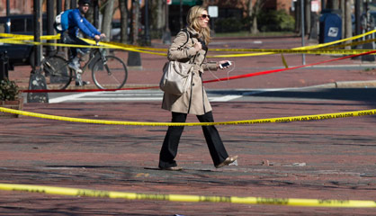

No es nada complicado, todo lo contrario, cargar de significados sentimentales cualquier tradición, cualquier costumbre de años, sacudida repentinamente por una bomba, rota para siempre. Es, sobre todo, una forma conveniente y, a veces, artificial de subrayar la vileza, la brutalidad y el dolor, pero en el caso del maratón de Boston lo realmente complicado habría sido no encontrarlos. Se puede expresar con grandilocuencia, como hizo Amby Burfoot, el ganador hace 45 años y perenne participante a quien las explosiones encontraron cuando se hallaba a 800 metros de la meta y dijo: “Para mí, el maratón no es otra cosa que el hecho de que Estados Unidos es un país de libertad y democracia… Forma parte de nuestra gran tradición democrática”. O se puede decir más sencillamente, con menos sentido patriótico o altisonante, pero el mensaje es el mismo, el maratón como territorio de libertad y orgullo. Y el valor del símbolo se multiplica incluso si en vez de maratón a secas se trata del de Boston, el padre de todos los maratones, el más antiguo del mundo. Se celebra ininterrumpidamente desde 1897 y siempre en el Día del Patriota, el tercer lunes de abril, y siempre con el mismo recorrido de 42,195 kilómetros lineales desde Hopkinton hasta Boylston Street en su confluencia con Copley Square.
La tercera víctima mortal del atentado de Boston es Lu Lingzi, una estudiante china
Sin embargo, los magistrados del Tribunal Europeo de Derechos Humanos no admiten las denuncias por torturas y malos tratos de la ex primera ministra